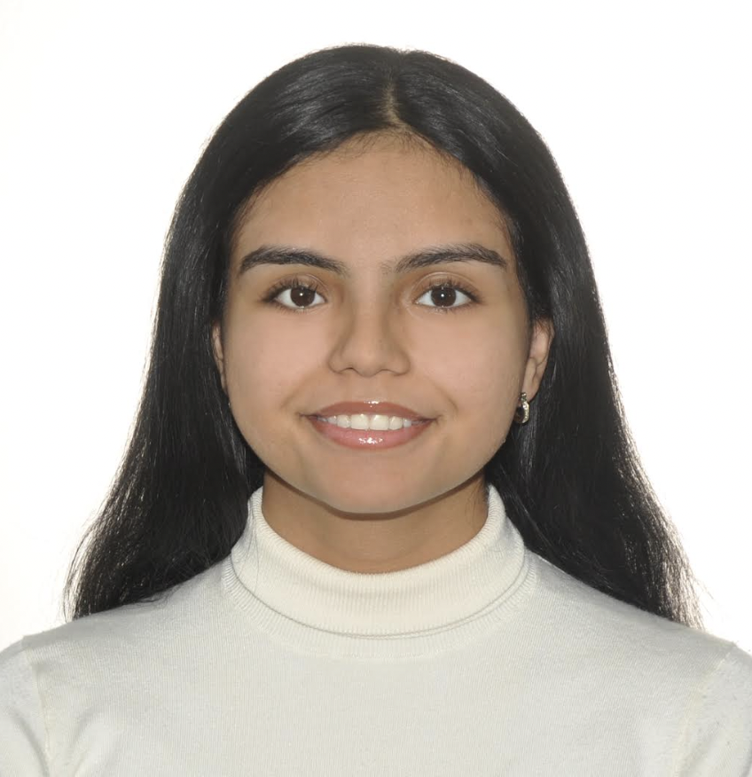

Principal Investigator
Dr. Sina Heydari
Assistant Professor — Department of Mechanical Engineering, CSUN
Dr. Heydari leads the SCALE Lab at CSUN. Dr. Sina Heydari joined the department of Mechanical Engineering as an Assistant Professor in Fall 2025. He received his Ph.D. in Mechanical Engineering from the University of Southern California in 2023. Dr. Heydari’s multidisciplinary research integrates fluid dynamics, control theory, and artificial intelligence to study locomotion in biological systems. Through biophysical modeling, he investigates how collective dynamics and energy efficiency emerge in complex systems such as schools of fish. His research has led to successful industry collaborations with organizations including Google DeepMind and has been featured in prominent media outlets such as the BBC and KQED.
Undergraduate Students

Sara Chabib
Undergraduate Researcher — CSUN
Sara's research investigates intermittent swimming in vortical flows.
Graduate Students
VG
Victor Bueno Garcia
PhD Student — Santa Clara University
Co-advised by Dr. On Shun Pak. Victor integrates fish schooling models with reinforcement learning algorithms.